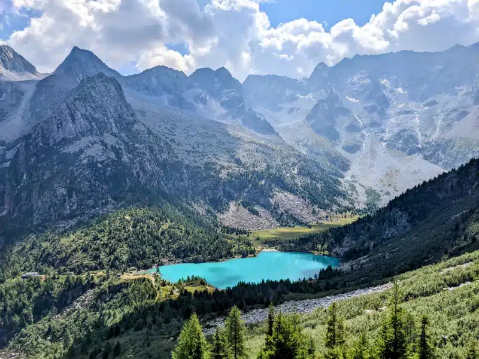

Le 5 località più belle da visitare in Sardegna

In questo post ti voglio portare in un viaggio su un’isola che a me sta particolarmente a cuore: la Sardegna. Ho scritto diversi post in precedenza sulla Sardegna, ma in questo articolo mi voglio concentrare sui 5 posti più belli da visitare in Sardegna per un weekend oppure per un viaggio di alcuni giorni.
La Sardegna è un’isola che incanta e ispira, con la sua bellezza senza tempo e il suo impegno per il turismo ecosostenibile. La Sardegna non è solo una meta turistica, ma un rifugio per coloro che cercano una fuga dal caos urbano e desiderano immergersi in un ambiente semplice, raffinato e autentico. Continua
I migliori sentieri per trekking della Lombardia
Siamo nate e cresciute in Lombardia. In realtà ho anche studiato giurisprudenza in Lombardia e mi sono sposato con Felicity in Lombardia. Isabella e Maya sono nate in Lombardia per cui ho un forte legame con questa bellissima regione del nord Italia. Continua
Settimana bianca in Alta Badia, ma non solo

Alta Badia meta ideale per una settimana bianca, ma non solo: continua a leggere e te ne accorgerai. Continua